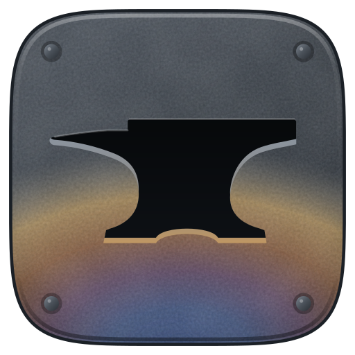

IronDeck
In developmentFor one person on their PC.
Everything on this page, with your Claude Code and your Claude plan.
A Windows program that drives Claude Code for you: it runs several tasks at once, picks up after interruptions, and only calls you in to decide.
Just your email and language · unsubscribe any time · Privacy
 IRONDECK
project: web-shop
IRONDECK
project: web-shop
Flow · Build the landing page
Tasks
2 / 45-hour limit
34 %Week
61 %Inbox · 2 decisions
Billing mode: plan only
The problem
Start a task, wait, review, start the next one. Step away from the screen and everything stops.
Hit the 5-hour or the weekly limit and the task stops halfway, with nobody to pick it back up.
Several sessions in the same project step on each other, and you lose track of how much plan you have left.
IronDeck takes care of that part.
Runs natively, no WSL. Alerts arrive as system notifications.
It knows how much plan you have left, and at the limit it does what you chose: wait for the reset or, once it lands before launch, keep going on extra usage up to your cap.
Each step with its own model and effort, decisions that wait for you, and a record of what happened.
Versions, A/B comparisons and export for your skills, in the same app that runs them.
Method
IronDeck is a program for your PC that drives Claude Code, Anthropic's coding agent. I built it to move long projects forward without starting every step by hand.
It uses your own Claude Code and your own Claude plan. There is no IronDeck server in between.
For example: research, design, build and review. Each step uses the Claude model that fits it: a quick one for reading, a stronger one for building.
It runs Claude Code on your PC, each task in its own copy of the project so they don't collide, up to four at once.
When something needs your call, it waits in the inbox and you get a Windows notification. You answer, it carries on.
Changes reach your project only when you give the go-ahead.
The instructions that teach Claude to work your way are kept with every version.
Features
All of this is already in the code, with automated tests, and is being tested on a real PC. Where something is still missing, I say so right there.
Up to four at once, each isolated in its own copy of the project.
With the model, effort and permissions for each step. They run in order, and each step gets what the previous one delivered.
If you close the app or the PC shuts down, it reruns the interrupted step when you return; finished work isn't lost. If a task fails, it retries with a stronger model, when there is one.
Everything that needs your answer, in one place, with a Windows notification.
Your 5-hour and weekly limits, with the same numbers you see on claude.ai.
At the limit it pauses without burning retries, and resumes on its own after the reset.
You decide how much of your week IronDeck may use. When it gets there, it asks before going on.
Plan only or, once it lands before launch, your plan plus your account's extra usage up to the cap you set. In plan-only mode, it stops the task as soon as Claude Code reports a separate charge.
Keeps your skills, the instructions that teach Claude to work your way, with every version. The number never goes down, and you can go back to an earlier one.
Compare two versions of a skill on the same cases and keep the one that works better. Each case runs three times, with Opus as the judge.
Checks each skill against the official rules before you share it, and packages it as a .skill file or a plugin.
Your templates adjust to each project through their own variables.
Plus: a Windows installer, and updates that roll back on their own if the new version doesn't start.
Under the hood
This is how the development version works. It may change before launch.
claude -p), with the task on standard input and the stream-json output read live. Tested with Claude Code 2.1.287.Bash(npm test).Not yet: the extra-usage mode and the autonomous layer. Both are on the roadmap.
Progress
IronDeck is built with the method it automates: a project map, batches of parallel work, briefs for Claude Code, and an independent review of every delivery.
The shared skeleton and a first complete task, end to end.
Versioning, templates, window, task engine, plan control and skill verification.
Everything connected: flows, comparisons, export and the Windows installer.
Installed and running on a real PC: it updates itself and rolls back if something fails, passes one step's result to the next, and backs up your library to your GitHub.
First, seeing how each project is going: its phases, its tasks and what's waiting on you. Then a central chat that hands out the work, automatic review of finished work, and links to other agents.
The base edition, the kits, and the team version.
Log
The project I showed in the video as “Herrería de Claude” is now called IronDeck. From here you can follow the progress, read the guides and join the waitlist.
Before IronDeck works on a project on its own, you'll be able to see how each one is going: its phases, its tasks and what's waiting on you. It's the first thing I'm building in phase 04.
IronDeck ran eight Claude Code tasks on a copy of a game I'm making. One wrote code with all its tests passing, and I accepted it. Another, which had to split up the work, stopped to ask me instead of making up what was missing.
The second test of the fix also failed, for a different reason, and also rolled back on its own. With both fixes in, the next four updates went through. And now every change to your skill library is pushed to your GitHub automatically, never forced.
When updating on a real PC, the new version didn't start. IronDeck went back to the previous version on its own in 28 seconds, without losing anything. The fix is merged and waiting for its second test.
IronDeck is installed on Windows with its shortcut and a library of real skills. A real task waited for a decision in the inbox and carried on by itself once answered, and the weekly usage matched claude.ai.
Until now everything was tested against a simulated Claude Code. This time IronDeck ran the real one: it tuned a skill and ran a full evaluation without a single interruption.
What's coming
Prices and dates to be announced. I don't charge anything in advance.
For one person on their PC.
Everything on this page, with your Claude Code and your Claude plan.
For teams and companies.
For large jobs with several people and many agents at once. If you want it for your team, join the waitlist.
Ready-to-use templates, flows, skills and context documents.
The first is the method I build IronDeck with: map the project before writing code, audit it, split it into batches, and hand work between chats without losing the thread.
The maker
I'm Wladimir Diaz (DwladimirL), an independent maker. The code is private for now, but every step forward, and every failure, goes in the log.
I build it for my own projects, and every phase is tested on my Windows PC before it counts as done.

GitHub · DwladimirLQuestions
A Windows PC, Claude Code installed with your account, and a Claude plan that includes it: Pro or Max, or a Team or Enterprise plan. Also Git and Node.js. The final list ships with the first release.
Not to use it: you describe the work and approve the result. It does help when reviewing what it delivers, just as with Claude Code on its own.
Each task works in a copy of your project and can only use the tools its step allows. Its changes reach your project when you approve them, but commands you allow, such as publishing or installing packages, act outside that copy. It's a version in development: use it with Git and backups.
Yours. IronDeck runs your own Claude Code installation on your PC. It doesn't ask you to sign in, doesn't store your password, and doesn't route your session through any server. What it uses comes out of your plan and, only if you turn it on, your account's extra usage.
IronDeck doesn't change how you use Claude Code: it runs your own official installation, with your account, on your PC. It doesn't share accounts, doesn't resell access, and respects your plan's limits: when it hits one, it pauses. Your Claude plan's terms still apply as always; check them if you have questions about your case.
Only if extra usage is turned on in your Anthropic account; without it, it can't. If it is on, IronDeck stops a task by default as soon as Claude Code reports extra usage, and what was used up to that point is billed. If you'd rather it not stop, you'll be able to turn on your account's extra usage with a spending cap; that mode arrives before launch. You also decide how much of your week IronDeck uses.
IronDeck has no server on the internet: its server runs only on your PC. What leaves is what Claude Code sends to Anthropic while working, checks to GitHub for updates, whatever your tasks do with the permissions you grant them, and the backup of your library to your own GitHub account. None of it goes through me.
No. It's an independent project that works with Claude Code. Anthropic doesn't sponsor or endorse it.
There's no date or price yet. I don't charge anything in advance, and the waitlist hears first.
For now, Windows only.
It's private for now. This site and its repository show the progress, the guides and the updates.
Support
I'll write to you about IronDeck's progress, the beta, the launch, and its editions and kits, and tell you first when it ships. I ask for your email and, if you like, three short questions.
Details in the Privacy notice.
If you'd like to help finish it: a contribution isn't a purchase, it doesn't buy access or set dates. It pays for development time and testing with the real Claude Code, so IronDeck ships sooner.
One-time or monthly, no account needed. When the kits come out, they'll be sold separately on the same page.
Opens soonIf you have a GitHub account, you can sponsor from there, one-time or monthly.
Opens soonStar the repository, follow it with “Watch”, and share it. It helps more people find it.
Star on GitHubJoin and I'll tell you first when it ships.